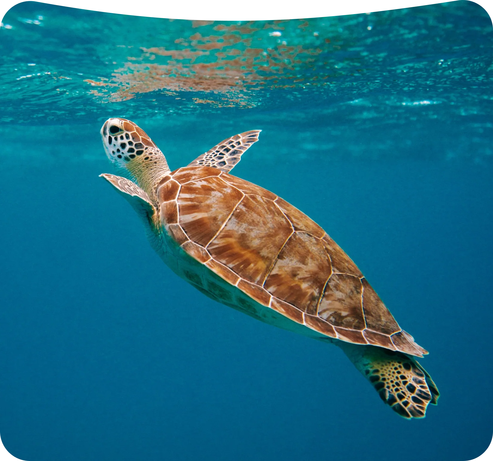
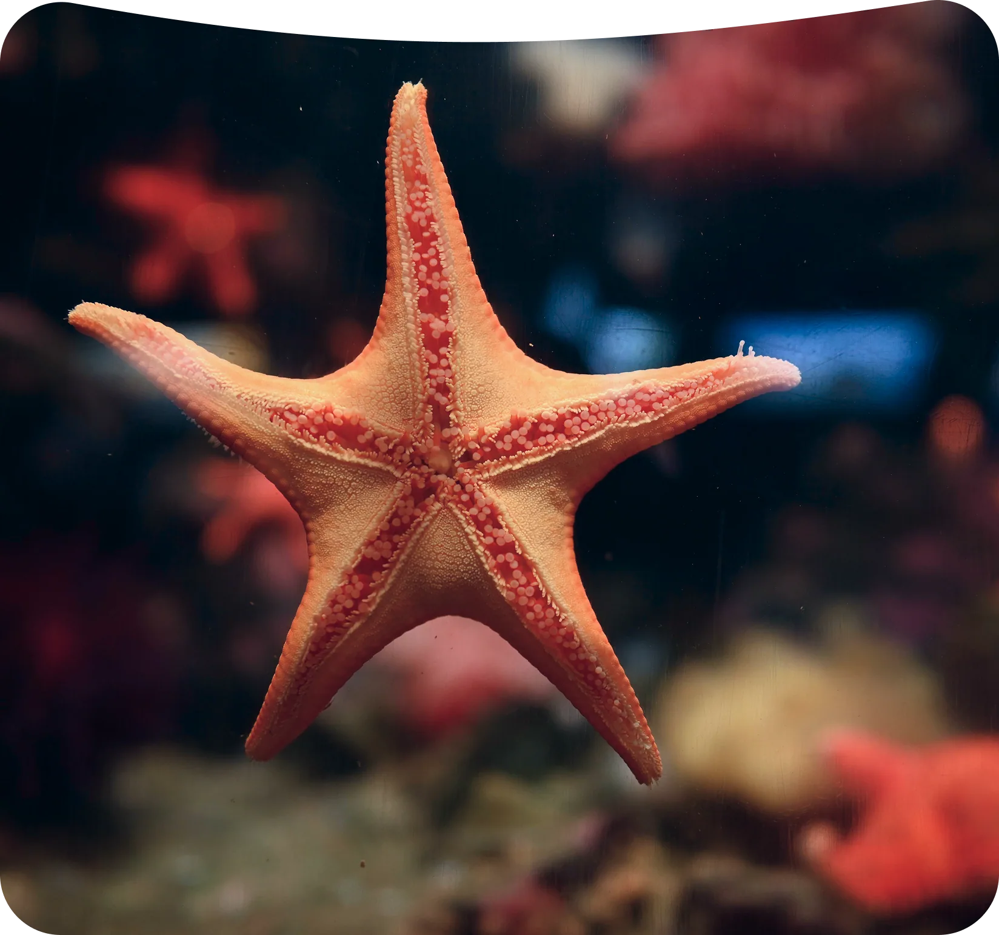
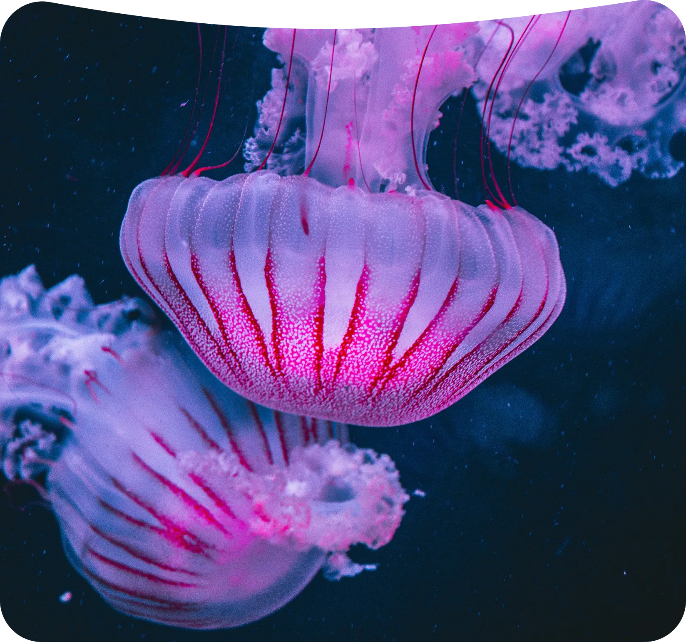
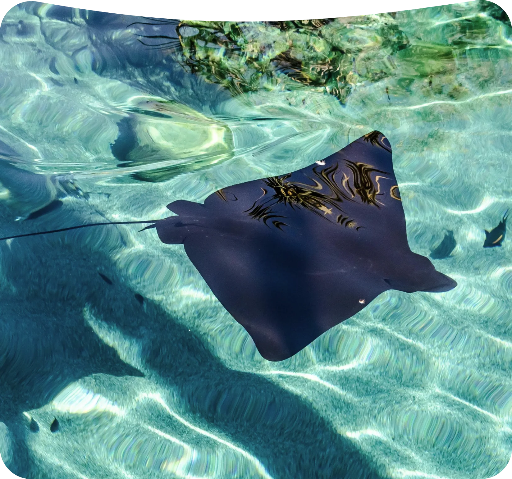
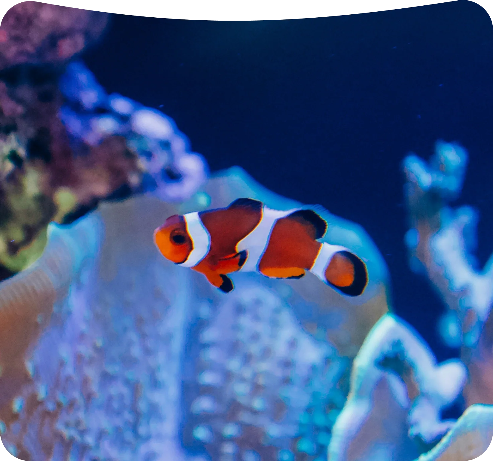
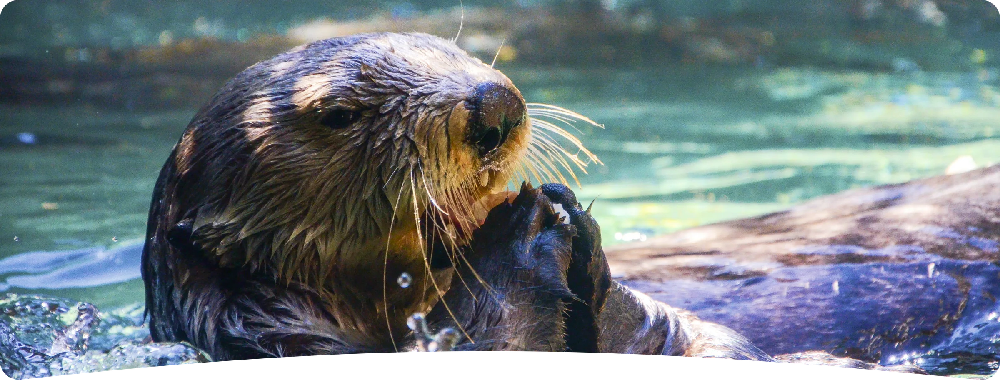

Fun Facts

Habitat
Discover Fun Facts
Get to know the animals you’ll see throughout Aqualume and beyond.
Tap a card to flip it and learn fun facts, habitats, and quick details.

Fun Facts

Quick Facts

Habitat

Fun Facts
Habitat
Sea otters live in coastal kelp forests and cold nearshore waters.
Diet
They eat sea urchins, crabs, clams, mussels, and other shellfish.
Special Fact
Sea otters use rocks as tools to crack open hard shells.
Ocean Role
By keeping sea urchin numbers down, otters help kelp forests stay healthy.
Warmth
They stay warm with incredibly dense fur instead of a thick layer of blubber.
Resting
Sea otters wrap themselves in kelp so they do not drift away while sleeping.